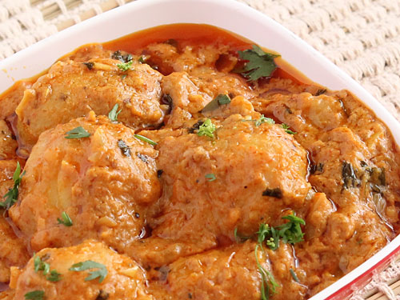

Ingredients:
1)900gms Aloo (Potatoes)
2)33/4th cups water
3)Salt To Taste
4)Ghee or oil for deep-frying
5)1 cup ghee
6)1 large Onion (finely chopped)
7)4 tbsp tomato puree
8)140 ml curd
9)4 tbsp hot water
10)1 green pepper (seeds removed and sliced)
11)1tsp garam masala powder
Spices
1)4 cloves
2)4 bay leaves
3)6 black peppercorns
4)4 green cardamoms
5)1 brown cardamom
6)1piece cinnamon stick
Paste
1)1 large onion (chopped)
2)12 flakes garlic
3)2 tbsp ginger
4)6black peppercorns
5)1 tsp poppy seeds
6)1 tbsp coriander seeds
7)1 tsp cumin seeds
8)2 dry red chilies
9)1 tsp turmeric powder
10)A pinch of ground mace
11)A pinch of ground nutmeg
How to make kashmiri dum aloo:
1.Scrape the aloo (potatoes), prick all over with a fork and soak in the water with little salt for 2 hours.
2.Dry the potatoes on a cloth and heat the ghee or oil.
3.Deep fry the potatoes until golden brown. Drain anvd set aside.
4.Heat the measured ghee in a flameproof pan and fry onions with all the spices until golden.
5.Grind the paste ingredients to a fairly smooth paste and stir into the onions.
6.Cook for 10 minutes. Stir in the tomato puree, curd and salt.
7.Add the aloo (potatoes) and hot water and stir over a low heat for 5 minutes.
8.Sprinkle the dum aloo with pepper and garam masala and cook for few minutes.